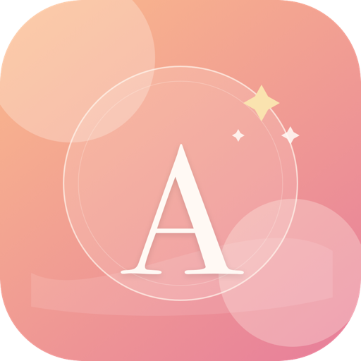

Contact
Email support for questions, bug reports, App Store review notes, or privacy questions. You can reach Alta's Affirmations at support.altaaffirmations@gmail.com.
Email support
Alta's AffirmationsSupport
Questions, bug reports, App Store review notes, and privacy questions can all point here.
Email support for questions, bug reports, App Store review notes, or privacy questions. You can reach Alta's Affirmations at support.altaaffirmations@gmail.com.
Email supportThe full privacy policy explains what the app stores locally and how the widget uses local app group storage.
Read the privacy policy